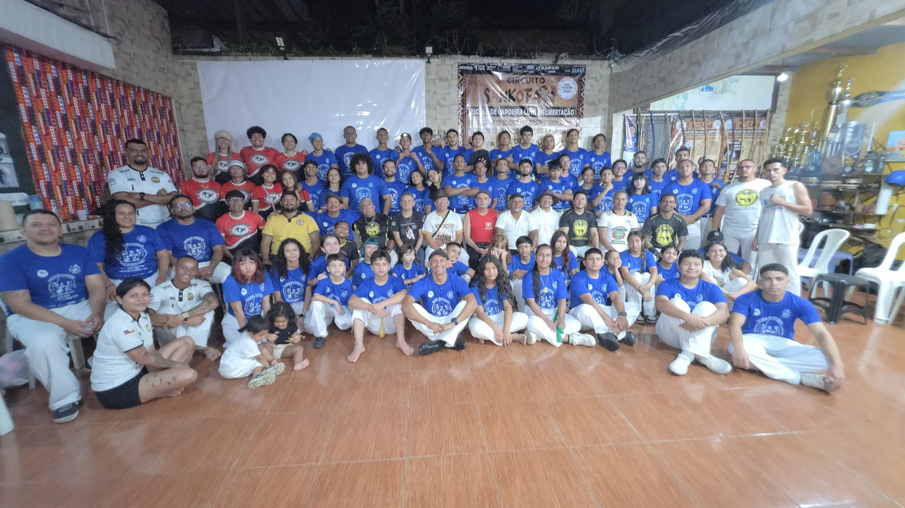
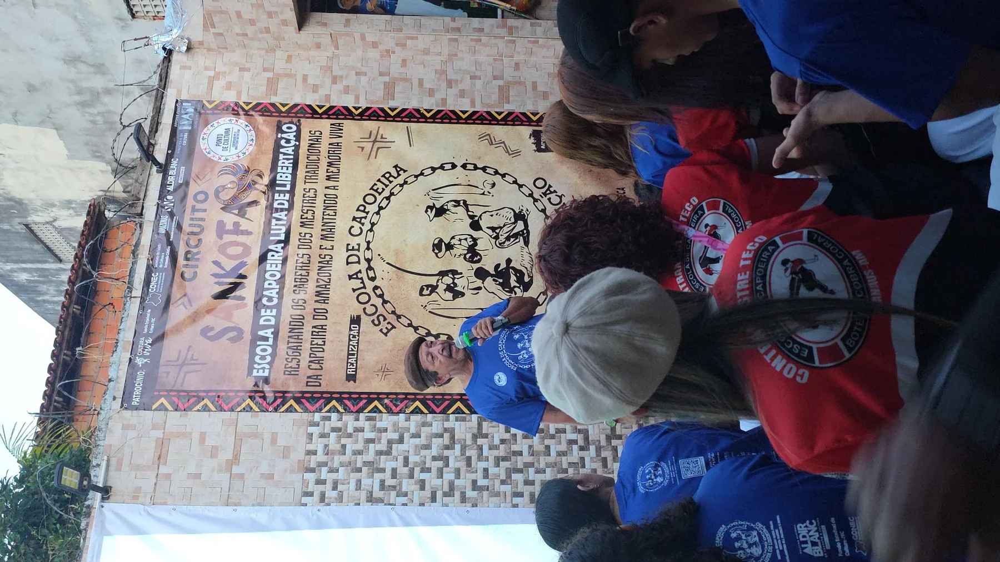
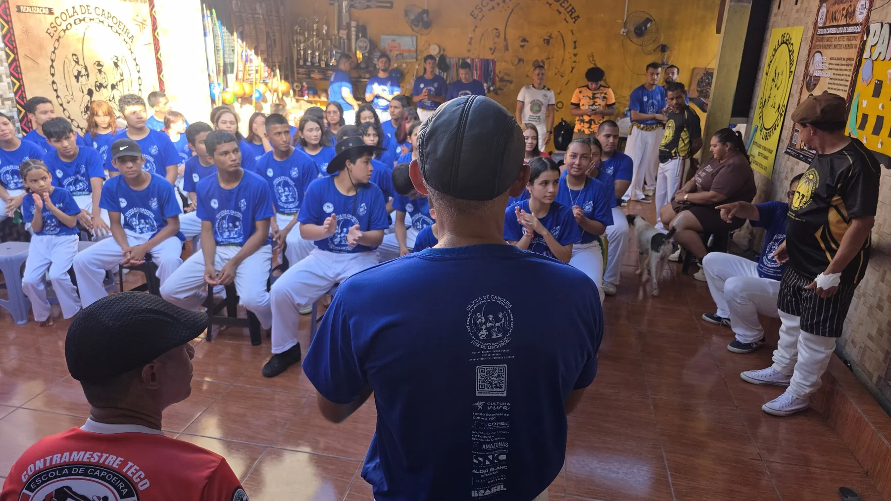

Escola de Capoeira
Role para conhecer ↓
Patrimônio.Resistência.Liberdade.
Ensino da Capoeira Tradicional Baiana, Angola e Regional, formando crianças, jovens e adultos por meio da cultura, da disciplina, da educação e do respeito às tradições da capoeira.
Próximo evento
Circuito Sankofa 2026
Data
Horário
Local
Em destaque
Ver todas as notícias
Últimas Notícias

Portal Em Tempo · 8 de julho de 2026
Circuito Sankofa resgata a história dos mestres que trouxeram a capoeira ao Amazonas

Portal Amazon Web TV
Circuito Sankofa resgata a memória dos mestres pioneiros da capoeira no Amazonas

TV Encontro das Águas
ECLL participa de gravação especial sobre o Dia da Capoeira no Amazonas
Programação confirmada
Outros eventos
Conheça a instituição
A ECLL
Fundada em 2007 por Dermilson Brasil de Freitas, o Mestre Canário, a Escola de Capoeira Luta de Libertação atua na preservação da capoeira, na formação cultural e na transformação social.
Explore o portal
Conteúdos
Redes sociais oficiais
Acompanhe a ECLL
Treine com a ECLL
Ver locais de treino
3 locais em Manaus
Consulte endereços, responsáveis, dias e horários de treino.